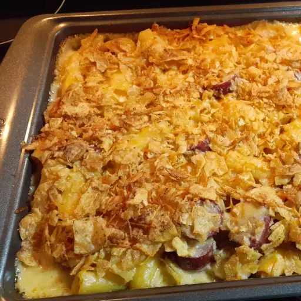

Macarrones con Queso de la vieja escuela

Esta es una receta casera de macarrones con queso, completamente sencilla y sencilla, como siempre hacían mi abuela y mi mamá. Una salsa blanca simple a la que se le agrega queso y algunos otros sabores con macarrones y una base de papas fritas. Esta receta rinde mucho, me gusta hacer dos moldes para poder llevar uno a una olla y guardar el otro en el refrigerador para más tarde. Es una receta fácil de ajustar si solo quieres hacer una sartén. Si no lo vas a cocinar de inmediato, simplemente mantén la cobertura separada hasta que estés listo para ponerlo en el horno
Ingredientes 
- 1 ¾ libras de macarrones integrales
- ¾ cup butter
- ¾ taza de harina para todo uso
- 6 tazas de leche, divididas
- 1 cucharada de salsa inglesa
- 1 cucharadita de mostaza en polvo
- 1 cucharadita de cebolla en polvo
- 1 cucharadita de pimienta de cayena
- sal y pimienta negra molida al gusto
- 1 paquete (8 onzas) de queso Cheddar rallado, dividido
- 3 paquetes (8 onzas) de queso americano rallado
- 1 bolsa (8 onzas) de papas fritas (como Lay's®), trituradas
- 1 taza de queso cheddar rallado
- ⅓ taza de queso parmesano rallado
- spray para cocinar con sabor a mantequilla
Preparacion 
- Ponga a hervir una olla grande con agua ligeramente salada. Cocine los macarrones con codo en agua hirviendo, revolviendo ocasionalmente hasta que estén bien cocidos pero firmes al morder, 8 minutos; drenar.
- Derrita la mantequilla en una olla grande a fuego medio-bajo. Agrega lentamente la harina a la mantequilla, batiendo constantemente; cocine hasta que se dore y la mezcla ya no huela a harina, aproximadamente 5 minutos. Vierta 1 taza de leche en la mezcla de harina, batiendo continuamente hasta que esté completamente incorporada, aproximadamente 45 segundos; repetir dos veces. Agregue las 3 tazas de leche restantes a la mezcla y bata para incorporar. Agrega la salsa inglesa, la mostaza en polvo, la cebolla en polvo y la pimienta de cayena a la mezcla; Sazone con sal y pimienta negro.
- Reduzca el fuego a bajo. Cocine la salsa, batiendo con frecuencia, hasta que comience a espesarse, aproximadamente 10 minutos. Agrega aproximadamente la mitad del paquete de queso Cheddar rallado; revuelve continuamente hasta que el queso se derrita por completo. Repita con el medio paquete restante de queso cheddar y el queso americano, aproximadamente 4 onzas a la vez. Una vez que el queso esté completamente incorporado, retire la salsa del fuego.
- Agrega los macarrones escurridos a la salsa de queso para cubrirlos. Divida los macarrones entre dos fuentes para hornear de 9x13 pulgadas.
- Mezcle las papas fritas trituradas, 1 taza de queso cheddar rallado y queso parmesano en un tazón. Cubra los macarrones con la mezcla de papas fritas de manera uniforme. Rocíe la mezcla de papas fritas con aceite en aerosol.
- Hornee en horno precalentado hasta que la corteza esté dorada y la salsa burbujee, de 35 a 45 minutos.

!A Disfrutar!
Regresar